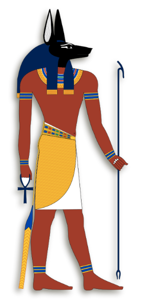

Ra
God of the Sun
One of the most important of the Gods, Ra is believed to
be the creator of the Universe and all life; he rules over
the Sky, The Earth, and the Underworld.
Ra would travel each day on his golden sun ship Mandjet
and at night he would travel through Duat (the underworld)
aboard his evening ship Meseket where he would battle the
evil giant serpent Apopis and other monsters. If he was
victorious Ra would emerge again aboard Mandjet and cause
another day to begin.
Ra is depicted in human form as a man with a sun disc
above his head with the disc often having a coiled serpent
around it. He is also seen as a man with the head of a
falcon or if he is travelling through the underworld he
can be seen as a man with the head of a ram.
The sun is the giver of life, controlling the ripening of
crops which were worked by man. Because of the life-giving
qualities of the sun the Egyptians worshiped the sun as a
god. The creator of the universe and the giver of life,
the sun or Ra represented life, warmth and growth. Since
the people regarded Ra as a principal god, creator of the
universe and the source of life, he had a strong influence
on them, which led to him being one of the most worshiped
of all the Egyptian gods and even considered King of the
Gods.
At an early period in Egyptian history his influence
spread throughout the whole country, bringing multiple
representations in form and in name. The most common form
combinations are with Atum (his human form), Khepri (the
scarab beetle) and Horus (the falcon). The form in which
he usually appears is that of a man with a falcon's head,
which is due to his combination with Horus, another
sky-god. On top of his head sits a solar disc with a
cobra, which in many myths represents the eye of Ra.
Nut
Goddess of the Sky

Nut (Ancient Egyptian: Nwt), also known by various other
transcriptions, is the goddess of the sky, stars, cosmos,
mothers, astronomy, and the universe in the ancient
Egyptian religion. She was seen as a star-covered nude
woman arching over the Earth, or as a cow. She was
depicted wearing the water-pot sign that identifies her.
Originally known as the goddess of the night
time sky Nut is one of the oldest of the gods; daughter of
Shu and Tefnut and is the mother of Set, Osiris, Isis, and
Nephthys.
Nut has a deep blue body which is covered in stars; she is
often depicted as bending over the earth and protecting it
along with protecting Ra the Sun God while he travels
through the sky, which led to Nut later becoming known as
“She who protects”.
Nut has also been known as the protector of the dead and
was often painted inside a sarcophagus or tomb to protect
the deceased.
Horus
God of the Sky

Horus or Her, Heru, Hor, Har in Ancient Egyptian, is one
of the most significant ancient Egyptian deities who
served many functions, most notably god of kingship and
the sky. He was worshipped from at least the late
prehistoric Egypt until the Ptolemaic Kingdom and Roman
Egypt. Different forms of Horus are recorded in history
and these are treated as distinct gods by Egyptologists.
These various forms may possibly be different
manifestations of the same multi-layered deity in which
certain attributes or syncretic relationships are
emphasized, not necessarily in opposition but
complementary to one another, consistent with how the
Ancient Egyptians viewed the multiple facets of reality.
He was most often depicted as a falcon, most
likely a lanner falcon or peregrine falcon, or as a man
with a falcon The earliest recorded form of Horus is the
tutelary deity of Nekhen in Upper Egypt, who is the first
known national god, specifically related to the ruling
pharaoh who in time came to be regarded as a manifestation
of Horus in life and Osiris in death.
The most
commonly encountered family relationship describes Horus
as the son of Isis and Osiris, and he plays a key role in
the Osiris myth as Osiris's heir and the rival to Set, the
murderer and brother of Osiris. In another tradition
Hathor is regarded as his mother and sometimes as his
wife.
Anubis
God of the Afterlife

Anubis is the Greek name of the god of death,
mummification, embalming, the afterlife, cemeteries,
tombs, and the Underworld, in ancient Egyptian religion,
usually depicted as a canine or a man with a canine head.
Archeologists have identified Anubis's sacred animal as an
Egyptian canid, the African golden wolf. The African wolf
was formerly called the "African golden jackal", until a
2015 genetic analysis updated the taxonomy and the common
name for the species. As a result, Anubis is often
referred to as having a "jackal" head, but this "jackal"
is now more properly called a "wolf".
Like many ancient Egyptian deities, Anubis assumed
different roles in various contexts. Depicted as a
protector of graves as early as the First Dynasty (c. 3100
– c. 2890 BC), Anubis was also an embalmer. By the Middle
Kingdom (c. 2055–1650 BC) he was replaced by Osiris in his
role as lord of the underworld. One of his prominent roles
was as a god who ushered souls into the afterlife. He
attended the weighing scale during the "Weighing of the
Heart", in which it was determined whether a soul would be
allowed to enter the realm of the dead. Despite being one
of the most ancient and "one of the most frequently
depicted and mentioned gods" in the Egyptian pantheon,
Anubis played almost no role in Egyptian myths.
Anubis was depicted in black, a color that symbolized
regeneration, life, the soil of the Nile River, and the
discoloration of the corpse after embalming. Anubis is
associated with his brother Wepwawet, another Egyptian god
portrayed with a dog's head or in canine form, but with
grey or white fur. Historians assume that the two figures
were eventually combined. Anubis' female counterpart is
Anput. His daughter is the serpent goddess Kebechet.
Set
God of Chaos
Set is a god of deserts, storms, disorder, violence, and
foreigners in ancient Egyptian religion. In Ancient Greek,
the god's name is given as Sēth (Σήθ). Set had a positive
role where he accompanies Ra on his barque to repel Apep,
the serpent of Chaos. Set had a vital role as a reconciled
combatant. He was lord of the red (desert) land, where he
was the balance to Horus' role as lord of the black (soil)
land.
In the Osiris myth, the most important Egyptian myth, Set
is portrayed as the usurper who killed and mutilated his
own brother, Osiris. Osiris's wife, Isis, reassembled his
corpse and resurrected her dead husband long enough to
conceive his son and heir, Horus. Horus sought revenge
upon Set and the myths describe their conflicts.
In ancient Egyptian astronomy, Set was commonly associated
with the planet Mercury.
Since he is related to the west of Nile which is the
desert, he is sometimes associated with a lesser deity Ha,
god of the desert which is a deity of a man with a desert
determinative on the head.
Isis
Goddess of Magic
Isis was a major goddess in ancient Egyptian religion
whose worship spread throughout the Greco-Roman world.
Isis was first mentioned in the Old Kingdom (c. 2686–2181
BCE) as one of the main characters of the Osiris myth, in
which she resurrects her slain husband, the divine king
Osiris, and produces and protects his heir, Horus. She was
believed to help the dead enter the afterlife as she had
helped Osiris, and she was considered the divine mother of
the pharaoh, who was likened to Horus. Her maternal aid
was invoked in healing spells to benefit ordinary people.
Originally, she played a limited role in royal rituals and
temple rites, although she was more prominent in funerary
practices and magical texts. She was usually portrayed in
art as a human woman wearing a throne-like hieroglyph on
her head. During the New Kingdom (c. 1550–1070 BCE), as
she took on traits that originally belonged to Hathor, the
preeminent goddess of earlier times, Isis was portrayed
wearing Hathor's headdress: a sun disk between the horns
of a cow.
In the first millennium BCE, Osiris and Isis became the
most widely worshipped Egyptian deities, and Isis absorbed
traits from many other goddesses. Rulers in Egypt and its
neighbor to the south, Nubia, built temples dedicated
primarily to Isis, and her temple at Philae was a
religious center for Egyptians and Nubians alike. Her
reputed magical power was greater than that of all other
gods, and she was said to protect the kingdom from its
enemies, govern the skies and the natural world, and have
power over fate itself.
Osiris
God of the Underworld
Osiris is the god of fertility, agriculture, the
afterlife, the dead, resurrection, life, and vegetation in
ancient Egyptian religion. He was classically depicted as
a green-skinned deity with a pharaoh's beard, partially
mummy-wrapped at the legs, wearing a distinctive atef
crown, and holding a symbolic crook and flail.
He was one of the first to be associated with the mummy
wrap. When his brother, Set, cut him up into pieces after
killing him, Isis, his wife, found all the pieces and
wrapped his body up, enabling him to return to life.
Osiris was at times considered the eldest son of the earth
god Geb and the sky goddess Nut, as well as being brother
and husband of Isis, with Horus being considered his
posthumously begotten son. He was also associated with the
epithet Khenti-Amentiu, meaning "Foremost of the
Westerners", a reference to his kingship in the land of
the dead. Through syncretism with Iah, he is also a god of
the Moon.
Osiris can be considered the brother of Isis, Set,
Nephthys, and Horus the Elder, and father of Horus the
Younger. The first evidence of the worship of Osiris was
found in the middle of the Fifth Dynasty of Egypt (25th
century BC), although it is likely that he was worshiped
much earlier; the Khenti-Amentiu epithet dates to at least
the First Dynasty, and was also used as a pharaonic title.
Most information available on the Osiris myth is derived
from allusions contained in the Pyramid Texts at the end
of the Fifth Dynasty, later New Kingdom source documents
such as the Shabaka Stone and the "The Contendings of
Horus and Seth", and much later, in narrative style from
the writings of Greek authors including Plutarch and
Diodorus Siculus.
Osiris was the judge of the dead and the underworld, and
the agency that granted all life, including sprouting
vegetation and the fertile flooding of the Nile River. He
was described as "He Who is Permanently Benign and
Youthful" and the "Lord of Silence". The kings of Egypt
were associated with Osiris in death – as Osiris rose from
the dead so they would be in union with him, and inherit
eternal life through a process of imitative magic.
Geb
God of the Earth
Geb was the Egyptian god of the earth and a mythological
member of the Ennead of Heliopolis. he could also be
considered a father of snakes. It was believed in ancient
Egypt that Geb's laughter created earthquakes and that he
allowed crops to grow.
Geb was frequently feared as father of snakes (one of the
names for snake was "son of the earth"). In a Coffin Texts
spell Geb was described as father of the mythological
snake Nehebkau of primeval times. In more mythology, Geb
also often occurs as a primeval divine king of Egypt from
whom his son Osiris and his grandson Horus inherited the
land after many contendings with the disruptive god Set,
brother and killer of Osiris. Geb could also be regarded
as personified fertile earth and barren desert, the latter
containing the dead or setting them free from their tombs,
metaphorically described as "Geb opening his jaws", or
imprisoning those there not worthy to go to the fertile
North-Eastern heavenly Field of Reeds. In the latter case,
one of his otherworldly attributes was an ominous
jackal-headed stave (called wsr.t Mighty One') rising from
the ground onto which enemies could be bound.
In the Heliopolitan Ennead (a group of nine gods created
in the beginning by the one god Atum or Ra), Geb is the
husband of Nut, the sky or visible daytime and nightly
firmament, the son of the earlier primordial elements
Tefnut (moisture) and Shu ('emptiness'), and the father to
the four lesser gods of the system – Osiris, Seth, Isis
and Nephthys. In this context, Geb was believed to have
originally been engaged with Nut and had to be separated
from her by Shu, god of the air. Consequently, in
mythological depictions, Geb was shown as a man reclining,
sometimes with his phallus still pointed towards Nut. Geb
and Nut together formed the permanent boundary between the
primeval waters and the newly created world.
Nephthys
Goddess of the Air
Nephthys was a goddess in ancient Egyptian religion. A
member of the Great Ennead of Heliopolis in Egyptian
mythology, she was a daughter of Nut and Geb. Nephthys was
typically paired with her sister Isis in funerary rites[1]
because of their role as protectors of the mummy and the
god Osiris and as the sister-wife of Set.
She was associated with mourning, the night/darkness,
service (specifically temples), childbirth, the dead,
protection, magic, health, embalming, and beer.
At the time of the Fifth Dynasty Pyramid Texts, Nephthys
appears as a goddess of the Heliopolitan Ennead. She is
the sister of Isis and companion of the war-like deity,
Set. As sister of Isis and especially Osiris, Nephthys is
a protective goddess who symbolizes the death experience,
just as Isis represented the birth experience. Nephthys
was known in some ancient Egyptian temple theologies and
cosmologies as the "Helpful Goddess" or the "Excellent
Goddess". These late ancient Egyptian temple texts
describe a goddess who represented divine assistance and
protective guardianship.
Nephthys is regarded as the mother of the funerary deity
Anubis (Inpu) in some myths. Alternatively Anubis appears
as the son of Bastet or Isis.
As the primary "nursing mother" of the incarnate pharaonic
god, Horus, Nephthys also was considered to be the nurse
of the reigning pharaoh himself. Though other goddesses
could assume this role, Nephthys was most usually
portrayed in this function. In contrast, Nephthys is
sometimes featured as a rather ferocious and dangerous
divinity, capable of incinerating the enemies of the
pharaoh with her fiery breath.
Shu
God of the Air
Shu was one of the primordial Egyptian gods, spouse and
brother to goddess Tefnut, and one of the nine deities of
the Ennead of the Heliopolis cosmogony. He was the god of
peace, lions, air, and wind.
As the air, Shu was considered to be a cooling, and thus
calming, influence, and pacifier. Due to the association
with dry air, calm, and thus Ma'at (truth, justice, order,
and balance), Shu was depicted as the dry air/atmosphere
between the earth and sky, separating the two realms after
the event of the First Occasion. Shu was also portrayed in
art as wearing an ostrich feather. Shu was seen with
between one and four feathers. The ostrich feather was
symbolic of lightness and emptiness. Fog and clouds were
also Shu's elements and they were often called his bones.
Because of his position between the sky and earth, he was
also known as the wind.
In a much later myth, representing a terrible weather
disaster at the end of the Old Kingdom, it was said that
Tefnut and Shu once argued, and Tefnut left Egypt for
Nubia (which was always more temperate). It was said that
Shu quickly decided that he missed her, but she changed
into a cat that destroyed any man or god that approached.
Thoth, disguised, eventually succeeded in convincing her
to return.
Bastet
Goddess of Protection
Bastet was a goddess of ancient Egyptian religion,
worshiped as early as the Second Dynasty (2890 BCE).
Bastet was worshiped in Bubastis in Lower Egypt,
originally as a lioness goddess, a role shared by other
deities such as Sekhmet. Eventually Bastet and Sekhmet
were characterized as two aspects of the same goddess,
with Sekhmet representing the powerful warrior and
protector aspect and Bastet, who increasingly was depicted
as a cat, representing a gentler aspect.
She was also depicted as the daughter of Ra and Isis, and
the consort of Ptah, with whom she had a son Maahes.
As protector of Lower Egypt, she was seen as defender of
the king, and consequently of the sun god, Ra. Along with
other deities such as Hathor, Sekhmet, and Isis, Bastet
was associated with the Eye of Ra. She has been depicted
as fighting the evil snake named Apep, an enemy of Ra. In
addition to her solar connections, sometimes she was
called "eye of the moon".
Bastet was also a goddess of pregnancy and childbirth,
possibly because of the fertility of the domestic cat.
Images of Bastet were often created from alabaster. The
goddess was sometimes depicted holding a ceremonial
sistrum in one hand and an aegis in the other—the aegis
usually resembling a collar or gorget, embellished with a
lioness head.
Bastet was also depicted as the goddess of protection
against contagious diseases and evil spirits.
Serket
Goddess of Scorpions
Serket is the goddess of fertility, nature, animals,
medicine, magic, and healing venomous stings and bites in
Egyptian mythology, originally the deification of the
scorpion. Her family life is unknown, but she is sometimes
credited as the daughter of Neith and Khnum, making her a
sister to Sobek and Apep.
Scorpion stings lead to paralysis and Serket's name
describes this, as it means "(she who) tightens the
throat"; however, Serket's name also can be read as
meaning "(she who) causes the throat to breathe", and so,
as well as being seen as stinging the unrighteous, Serket
was seen as one who could cure scorpion stings and the
effects of other venoms such as snakebites.
In the art of ancient Egypt, Serket was shown as a
scorpion (a symbol found on the earliest artifacts of the
culture, such as from Naqada III) or as a woman with a
scorpion on her head. Although Serket does not appear to
have had any temples, she had a sizable number of priests
in many communities.
One of the most dangerous species of scorpion, the
Deathstalker (Leiurus quinquestriatus) resides in North
Africa, and its sting may kill, so Serket was considered a
highly important goddess, and sometimes she was considered
by pharaohs to be their patron. Her close association with
the early rulers implies that she was their protector,
notably Scorpion I and Scorpion II.
As the protector against venom and snakebite, Serket often
was said to protect the deities from Apep, the great
snake-demon of evil, sometimes being depicted as the guard
when Apep was captured.